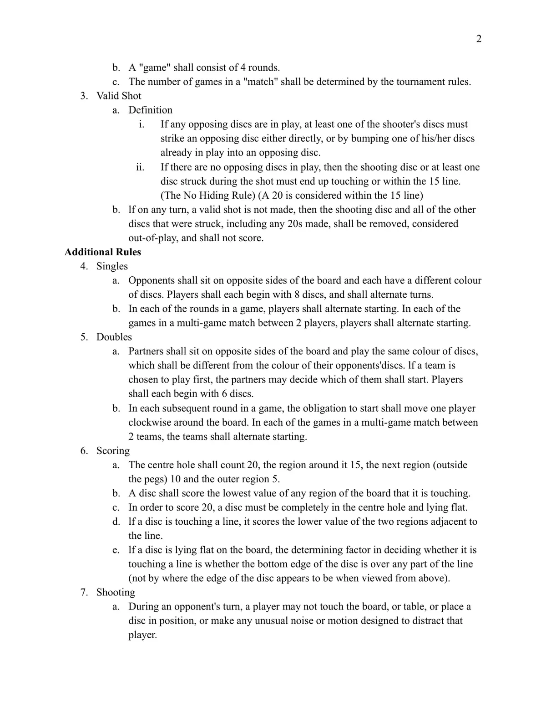
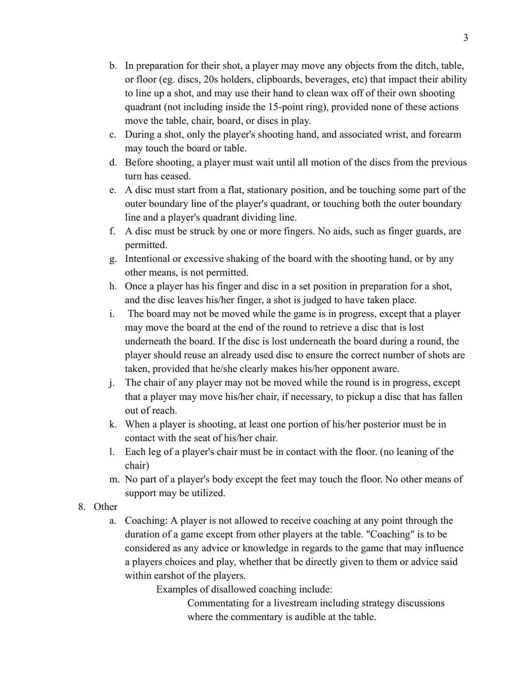
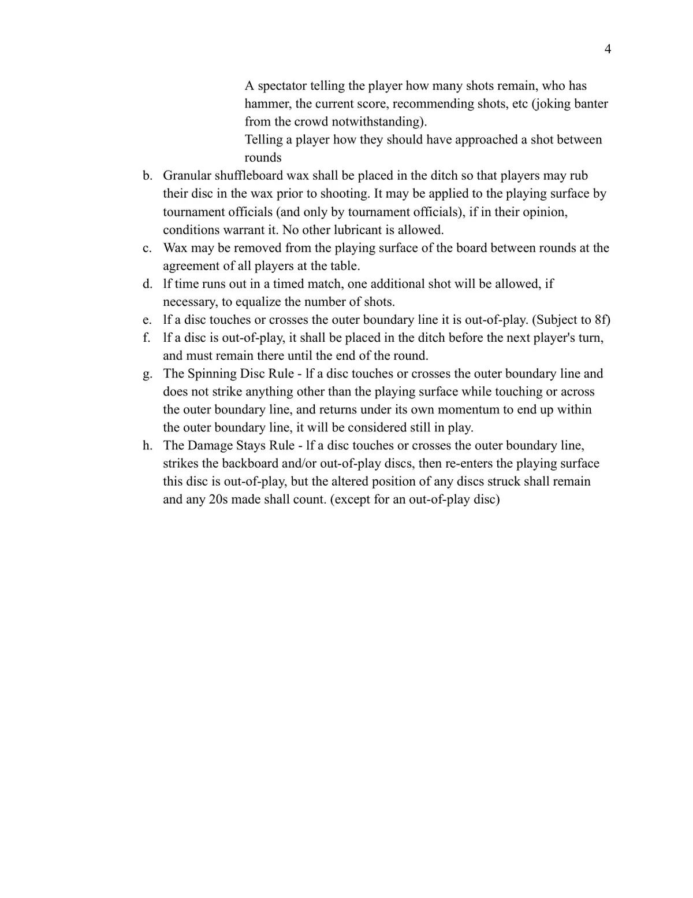

🎯 弹指棋
Crokinole · 设计：传统游戏（1876） · NCA（无传统出版社） 出版 · 2 / 4 人 · 官方英文规则书全文翻译（4 页 · AI 辅助机翻）
本页收录《弹指棋》（Crokinole, 1876）的原版官方规则书全部 4 页（底本：NCA 加拿大弹指棋协会官方规则，NCA-Official-Rules-of-Crokinole.docx.pdf），逐页随图排列，点击任意图片即可放大查看；每页下方默认折叠了该页的 AI 辅助中文机翻对照，需要时可展开。规则内容归 NCA（无传统出版社） 及版权方所有，收录仅供个人学习查阅。
整理说明：机翻对照按本站术语口径对齐（牌库/手牌/回合/轮/板块/指示物等），PDF 图文混排页的语序可能与原书视觉顺序略有出入；规则细节请一律以页面上方原书页面为准。
📝 第 1 页 AI 机翻对照（点击展开）
克罗克诺尔官方规则
由国家克罗克诺尔协会出版
经NCA董事会于2026年5月6日批准
国家克罗克诺尔协会(NCA)的目标是促进克罗克诺尔运动的发展。
NCA支持现有的本地俱乐部和新俱乐部的组建，并组织一系列称为NCA巡回赛的NCA锦标赛。
以下是NCA巡回赛活动中所有玩家都应遵守的国家克罗克诺尔协会官方规则。申请在锦标赛中偏离这些规则的请求必须在锦标赛申请过程中提出。经NCA董事会酌情决定，采用替代规则的锦标赛可能被评级为实验性锦标赛。
基本游戏规则
1. 准备工作
a. 玩家或队伍的初始游戏顺序、圆盘颜色和座位位置，应由抽签或俱乐部或锦标赛组织者决定。
2. 游戏方式
a. "一轮"应按以下方式进行：
i. 每位玩家按顺时针方向轮流尝试进行"有效击打"。(见规则3)
ii. 每回合结束后，所有被击入20分区(20s)的圆盘应被移除并放置在所有玩家可见的指定区域，且必须留在那里直到该轮结束。
iii. 在该轮结束时，应计算版图上的分数以及20分区(20s)的分数，然后才能移动任何圆盘。
iv. 得分较高的一方将获得2分。如果该轮平局，每位玩家或队伍将获得1分。

📝 第 2 页 AI 机翻对照（点击展开）
b. 一局"游戏"应由4个轮组成。
c. 一场"比赛"中的游戏数量应由比赛规则决定。
3. 有效击球
a. 定义
i.
如果任何对手的棋子在游戏中，击球者的至少一个棋子必须直接撞击一个对手的棋子，或者将他/她已经在游戏中的一个棋子撞向一个对手的棋子。
ii.
如果没有对手的棋子在游戏中，那么击出的棋子或击球过程中被击中的至少一个棋子必须最终停留在 touching 或 15 分线内。
（禁止隐藏规则）（20 分被视为在 15 分线内）
b. 如果在任何回合中，没有做出有效击球，那么击出的棋子和所有被击中的其他棋子，包括任何打出的 20 分，应被移除，视为出局，不得计分。
附加规则
4. 单人赛
a. 对手应坐在棋盘的对面，并拥有不同颜色的棋子。每位玩家应开始时有 8 个棋子，并轮流进行回合。
b. 在游戏中的每个轮中，玩家应轮流开始。在两名玩家之间的多局比赛中的每个游戏中，玩家应轮流开始。
5. 双人赛
a. 队友应坐在棋盘的对面，使用相同颜色的棋子，该颜色应不同于对手的棋子颜色。如果一个队伍被选为首先进行，队友可以决定由谁开始。每位玩家应开始时有 6 个棋子。
b. 在游戏中的每个后续轮中，开始的义务应顺时针移动一位玩家。在两队之间的多局比赛中的每个游戏中，队伍应轮流开始。
6. 计分
a. 中心孔计 20 分，其周围区域计 15 分，下一个区域（木桩外）计 10 分，最外区域计 5 分。
b. 一个棋子应计分为它所接触的棋盘任何区域的最低分值。
c. 要获得 20 分，一个棋子必须完全在中心孔内并平放。
d. 如果一个棋子接触一条线，它应计分为该线相邻的两个区域中较低的分值。
e. 如果一个棋子平放在棋盘上，判断它是否接触一条线的决定因素是棋子的底部边缘是否在线的任何部分上方（而不是从上方观察时棋子边缘的视觉位置）。
7. 击球
a. 在对手的回合中，玩家不得触摸棋盘或桌子，或将棋子放置到位，或制造任何旨在分散该注意力的异常噪音或动作。

📝 第 3 页 AI 机翻对照（点击展开）
b. 在准备击球时，玩家可以移动沟渠、桌面或地板上（例如：圆盘、20分支架、写字板、饮料等）影响其瞄准能力的任何物体，并且可以用手清理自己击球象限内的蜡（不包括15分环内部），前提是这些行动不会移动桌子、椅子、版图或正在游戏中的圆盘。
c. 击球期间，只有玩家的击球手以及相关手腕和前臂可以接触版图或桌面。
d. 击球前，玩家必须等待前一回合所有圆盘的运动完全停止。
e. 圆盘必须从平坦的静止位置开始，并且接触玩家象限外边界线的某部分，或者同时接触外边界线和玩家象限分隔线。
f. 圆盘必须被一个或多个手指击打。不允许使用辅助工具，如手指护套。
g. 不允许用击球手或任何其他方式故意或过度摇晃版图。
h. 一旦玩家将手指和圆盘置于准备击球的固定位置，并且圆盘离开其手指，即视为一次击球已经发生。
i. 游戏进行中不得移动版图，但玩家可以在回合结束时移动版图以取回掉在版图下的圆盘。如果圆盘在回合中掉在版图下，玩家应使用已经使用过的圆盘以确保完成正确数量的击球，前提是他/她明确告知对手。
j. 回合进行中不得移动任何玩家的椅子，但玩家如有必要，可以移动自己的椅子去捡拾掉在够不着地方的圆盘。
k. 玩家击球时，其臀部至少有一部分必须与椅子座位接触。
l. 玩家椅子的每条腿都必须接触地面。（不得倾斜椅子）
m. 玩家的身体除脚外不得接触地面。不得使用其他支撑方式。
- 其他
a. 指导：游戏进行过程中，玩家不允许接受来自桌边其他玩家以外的任何指导。"指导"应被视为任何可能影响玩家选择和游戏的建议或知识，无论是直接给予玩家的，还是在玩家听力范围内所说的建议。
不允许的指导示例包括：
为直播进行解说，包括在桌边可听到的策略讨论。

📝 第 4 页 AI 机翻对照（点击展开）
观众可以告诉玩家还剩多少次投掷、谁拥有锤子、当前分数、建议投掷方式等（但观众中的玩笑调侃除外）。
在回合之间告诉玩家他们本应如何处理一次投掷
b. 应将细颗粒的冰壶蜡放入沟槽中，以便玩家在投掷前可以将他们的圆盘在蜡中摩擦。如果裁判官员认为情况需要，他们可以将蜡涂抹到游戏表面上（且仅由裁判官员涂抹）。不允许使用其他润滑剂。
c. 在回合之间，经桌上所有玩家同意，可以从游戏板上移除蜡。
d. 在计时比赛中，如果时间用完，如有必要，将允许额外进行一次投掷，以使投掷次数相等。
e. 如果圆盘触及或越过外边界线，则视为出界。（受8f条款约束）
f. 如果圆盘出界，应在下一位玩家的回合前将其放入沟槽中，并且必须留在那里直到回合结束。
g. 旋转圆盘规则 - 如果圆盘在触及或越过外边界线时没有撞击游戏表面以外的任何物体，并且凭借自身动量返回并最终停留在外边界线内，则将被视为仍在游戏中。
h. 损留规则 - 如果圆盘触及或越过外边界线，撞击了挡板和/或出界的圆盘，然后重新进入游戏表面，则该圆盘出界，但被撞击的任何圆盘的 altered position（改变后的位置）将保持不变，并且获得的任何20分都将计入。（出界的圆盘除外）